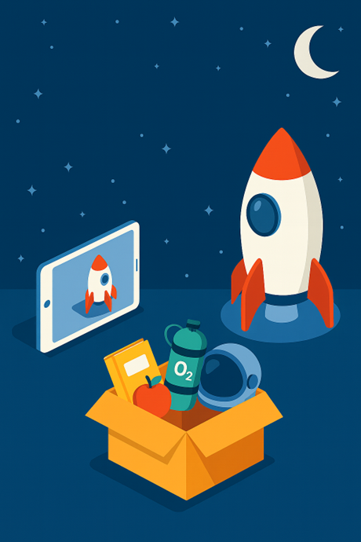

🌙 Planifica tu Viaje a la Luna
¿Os imagináis que vais a viajar a la Luna? 🌕🚀
Ya tenéis vuestro cohete preparado en el iPad con TinkerCad… pero aún está vacío.
Vuestra misión es decidir qué cosas llevar dentro para que el viaje sea un éxito.
Tendréis que trabajar en equipo para pensar juntos:
- ¿Qué objetos son imprescindibles para sobrevivir en la Luna?
- ¿Qué cosas os harían sentir cómodos durante el viaje?
- ¿Qué objetos llevaríais para aprender, divertiros o recordar la Tierra?
Cuando hayáis decidido, colocaréis esos objetos dentro del cohete digital.
Al final, cada grupo enseñará su cohete a la clase y explicará por qué ha elegido esos objetos.
💡 Recordad: no hay una única respuesta correcta. Lo importante es pensar, decidir en grupo y justificar vuestras elecciones.
